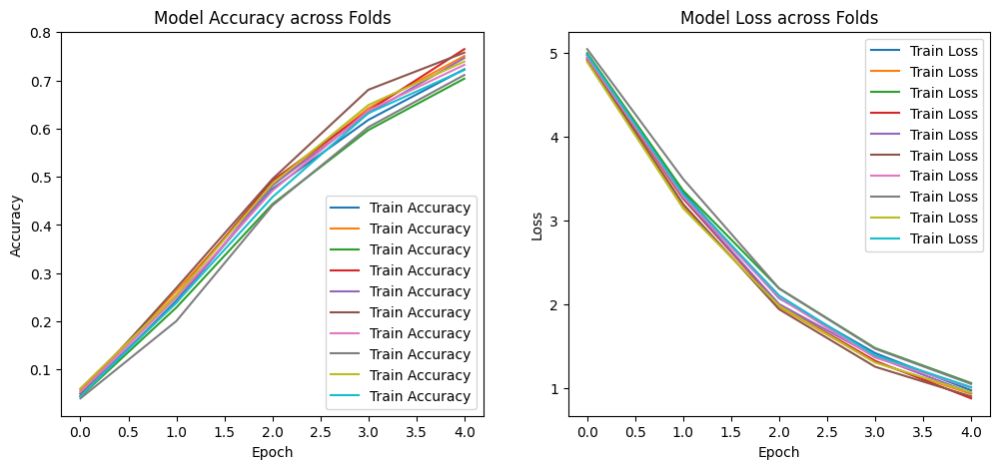
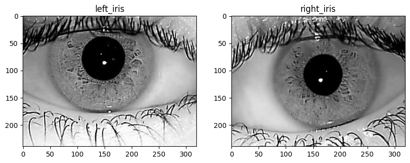

import torch
from transformers import pipeline
DEVICE = torch.device('cuda' if torch.cuda.is_available() else 'cpu')
pipe = pipeline(task="image-feature-extraction", model_name="google/vit-base-patch16-224", device=DEVICE, pool=True)No model was supplied, defaulted to google/vit-base-patch16-224 and revision 3f49326 (https://huggingface.co/google/vit-base-patch16-224).
Using a pipeline without specifying a model name and revision in production is not recommended.WARNING:tensorflow:From D:\ENV\DEEP\Lib\site-packages\tf_keras\src\losses.py:2976: The name tf.losses.sparse_softmax_cross_entropy is deprecated. Please use tf.compat.v1.losses.sparse_softmax_cross_entropy instead.
Some weights of ViTModel were not initialized from the model checkpoint at google/vit-base-patch16-224 and are newly initialized: ['vit.pooler.dense.bias', 'vit.pooler.dense.weight']
You should probably TRAIN this model on a down-stream task to be able to use it for predictions and inference.
Fast image processor class <class 'transformers.models.vit.image_processing_vit_fast.ViTImageProcessorFast'> is available for this model. Using slow image processor class. To use the fast image processor class set `use_fast=True`.import os
from pil
from PIL import Image
import requests
image_folder = r'D:\BIOMETRIC_PROJECT\IITD-Database'
list_of_folder = [filename for filename in os.listdir(image_folder)]
image_paths = []
features_dict = {}
# print(list_of_folder)
id = 0
for i in range(len(list_of_folder)):
# for i in range(8):
filename = list_of_folder[i]
path = os.path.join(image_folder, filename)
left_files = []
right_files = []
for file in os.listdir(path):
# print(file)
if file[-5:]=="L.bmp":
left_files.append(file)
if file[-5:]=="R.bmp":
right_files.append(file)
for i in range(min(len(left_files),len(right_files))):
# os.path.join(path, file)
images = {"left":Image.open( os.path.join(path, left_files[i])).convert("RGB"),
"right":Image.open(os.path.join(path, right_files[i])).convert("RGB"),
"id":filename}
# print(images)
features_dict[str(id)] = images
id = id+1
--------------------------------------------------------------------------- NameError Traceback (most recent call last) Cell In[2], line 25 22 right_files.append(file) 23 for i in range(min(len(left_files),len(right_files))): 24 # os.path.join(path, file) ---> 25 images = {"left":Image.open( os.path.join(path, left_files[i])).convert("RGB"), 26 "right":Image.open(os.path.join(path, right_files[i])).convert("RGB"), 27 "id":filename} 28 # print(images) 29 features_dict[str(id)] = images NameError: name 'Image' is not defined
len([key for key in features_dict])
features_dict["0"]len(features_dict)
1052from PIL import Image, ImageOps
from torchvision import transforms
from datasets import Dataset
# Define data augmentation transforms for PIL images
data_transform = transforms.Compose([
transforms.RandomHorizontalFlip(),
transforms.RandomRotation(degrees=30),
transforms.ColorJitter(brightness=0.2, contrast=0.2, saturation=0.2, hue=0.2),
transforms.RandomResizedCrop(size=(192, 192), scale=(0.8, 1.0)),
])
# Create a new dataset to store both original and augmented images
# Add original images to the new dataset
data_feature_label = {}
# Apply data augmentation and add augmented images to the new dataset
# for image, label, file_path in zip(dataset["image"], dataset["labels"], dataset["image_file_path"]):
id1 = 0
for item in features_dict:
dict1 = features_dict[item]
id_name = dict1["id"]
images = {"left":pipe(dict1["left"]),"right":pipe(dict1["right"]),"id":id_name}
data_feature_label[str(id1)] = images
id1+=1
# print(id_name,item)
left_image = data_transform(dict1["left"])
right_image = data_transform(dict1["right"])
images = {"left":pipe(left_image),"right":pipe(right_image),"id":id_name}
data_feature_label[str(id1)] = images
id1+=1
# # Append augmented image and corresponding label to the new dataset
# combined_data["image_file_path"].append(f"{file_path}_augmented.jpg") # Adjust the filename as needed
# combined_data["image"].append(augmented_image)
# combined_data["labels"].append(label)
len(data_feature_label)
import pickle
# # Open a file in binary write mode
# with open("data_new1.pickle", "wb") as f:
# # Serialize and save the object to the file
# pickle.dump(data_feature_label, f)
import pickle
with open("IITD_Features.pickle", "rb") as f:
data = pickle.load(f)
len(data)
data_feature_label = datalen(data_feature_label)2104import pandas as pd
df = pd.DataFrame().from_dict(data_feature_label)
# df.to_csv("iitd_.csv")import numpy as np
def generate_orthogonal_matrix(key):
# Use the key to seed the random number generator
np.random.seed(key)
# Create a random 4x4 matrix
random_matrix = np.random.rand(4, 4)
# Perform Gram-Schmidt process to make the matrix orthogonal
def gram_schmidt(A):
Q, _ = np.linalg.qr(A) # QR decomposition provides an orthogonal Q
return Q
orthogonal_matrix = gram_schmidt(random_matrix)
orthogonal_vector = orthogonal_matrix.flatten().reshape(16, 1)
return orthogonal_vector
# Example usage
images = []
labels_arr = []
for id1 in data_feature_label:
vector_lx768 = np.array(data_feature_label[id1]["left"][0])
vector_lx768 = vector_lx768.reshape(1, 768)
# print(data_feature_label["0"])
vector_rx768 = np.array(data_feature_label[id1]["right"][0])
vector_rx768 = vector_rx768.reshape(1, 768)
key = int(data_feature_label[id1]["id"])
orthogonal_matrix = generate_orthogonal_matrix(key)
left_projection_matrix = np.dot(orthogonal_matrix, vector_lx768)
Right_projection_matrix = np.dot(orthogonal_matrix, vector_rx768)
# print(left_projection_matrix.shape,Right_projection_matrix.shape)
Cancelabel_matrix = np.multiply(left_projection_matrix, Right_projection_matrix)
# for item in data_feature_label:
# print(data_feature_label[item])
# print(Cancelabel_matrix.shape)
images.append(Cancelabel_matrix)
labels_arr.append(data_feature_label[id1]["id"])
# print(result_matrix.shape)
# Example usage
images = []
labels_arr = []
for id1 in data_feature_label:
vector_lx768 = np.array(data_feature_label[id1]["left"][0])
vector_lx768 = vector_lx768.reshape(1, 768)
# print(data_feature_label["0"])
vector_rx768 = np.array(data_feature_label[id1]["right"][0])
vector_rx768 = vector_rx768.reshape(1, 768)
key = int(data_feature_label[id1]["id"])
fuse_feature = np.multiply(vector_lx768, vector_rx768)
orthogonal_matrix = generate_orthogonal_matrix(key)
Cancelabel_matrix = np.dot(orthogonal_matrix, fuse_feature)
# Right_projection_matrix = np.dot(orthogonal_matrix, vector_rx768)
# # print(left_projection_matrix.shape,Right_projection_matrix.shape)
# Cancelabel_matrix = np.multiply(left_projection_matrix, Right_projection_matrix)
# for item in data_feature_label:
# print(data_feature_label[item])
# print(Cancelabel_matrix.shape)
images.append(Cancelabel_matrix)
labels_arr.append(data_feature_label[id1]["id"])
# print(result_matrix.shape)Cancelabel_matrix.shape(16, 768)np.unique(labels_arr)array(['014', '015', '016', '017', '018', '019', '020', '021', '022',
'023', '024', '025', '026', '027', '028', '029', '030', '031',
'032', '033', '034', '035', '036', '037', '038', '039', '040',
'041', '042', '043', '044', '045', '046', '047', '048', '049',
'050', '051', '052', '053', '054', '055', '056', '057', '058',
'059', '060', '061', '062', '063', '064', '065', '066', '067',
'068', '069', '070', '071', '072', '073', '074', '075', '076',
'077', '078', '079', '080', '081', '082', '083', '084', '085',
'086', '087', '088', '089', '090', '091', '092', '093', '094',
'095', '096', '097', '098', '099', '100', '101', '102', '103',
'104', '105', '106', '107', '108', '109', '110', '111', '112',
'113', '114', '115', '116', '117', '118', '119', '120', '121',
'122', '123', '124', '125', '126', '127', '128', '129', '130',
'131', '132', '133', '134', '135', '136', '137', '138', '139',
'140', '141', '142', '143', '144', '145', '146', '147', '148',
'149', '150', '151', '152', '153', '154', '155', '156', '157',
'158', '159', '160', '161', '162', '163', '164', '165', '166',
'167', '168', '169', '170', '171', '172', '173', '174', '175',
'176', '177', '178', '179', '180', '181', '182', '183', '184',
'185', '186', '187', '188', '189', '190', '191', '192', '193',
'194', '195', '196', '197', '198', '199', '200', '201', '202',
'203', '204', '205', '206', '207', '208', '209', '210', '211',
'212', '213', '214', '215', '216', '217', '218', '219', '220',
'221', '222', '223', '224'], dtype='<U3')len(images)2104from tensorflow.keras.models import Sequential
# from tensorflow.keras.layers import Conv2D, MaxPooling2D, Flatten, Dense, Dropout
import tensorflow.keras.layers as layers
num_classes =np.unique(labels_arr)
def create_cnn_model():
model = Sequential([
layers.Flatten(input_shape=(16,768,1)),
layers.Dense(100, activation='relu'), # Flatten the input
#layers.Dense(1024, activation='relu'),
layers.Dropout(0.5), # Dropout for regularization
layers.Dense(225, activation='softmax')# Output layer for classification
])
model.compile(optimizer='adam', loss='categorical_crossentropy', metrics=['accuracy'])
return model
# model.summary()
all_images = []
for i in range(2104):
all_images.append(images[i].reshape( 16, 768, 1))
all_images[0].shape
(16, 768, 1)import numpy as np
import matplotlib.pyplot as plt
from tensorflow.keras.utils import to_categorical
from sklearn.model_selection import KFold
from sklearn.model_selection import train_test_split
# Assuming `all_images` is your dataset and `labels_arr` is your label array
all_images = np.array(all_images).reshape(2104, 16, 768, 1)
# One-hot encode labels
num_classes = 225
y_data_cat = to_categorical(labels_arr, num_classes=num_classes)
# K-Fold Cross Validation
kf = KFold(n_splits=10, shuffle=True, random_state=42)
fold_no = 1
acc_per_fold = []
loss_per_fold = []
# Create lists to store accuracy and loss for all folds
accuracy_per_epoch = []
loss_per_epoch = []
for train_index, val_index in kf.split(all_images):
# Split data
X_train, X_val = all_images[train_index], all_images[val_index]
y_train, y_val = y_data_cat[train_index], y_data_cat[val_index]
# Initialize the CNN model (make sure `create_cnn_model` is defined)
model = create_cnn_model()
# Train the model
print(f'Training for fold {fold_no} ...')
history = model.fit(X_train, y_train, epochs=5, batch_size=32, validation_data=(X_val, y_val), verbose=1)
# Capture the accuracy and loss for plotting
accuracy_per_epoch.append(history.history['accuracy'])
loss_per_epoch.append(history.history['loss'])
# Evaluate the model
scores = model.evaluate(X_val, y_val, verbose=0)
print(f'Score for fold {fold_no}: Loss = {scores[0]}, Accuracy = {scores[1]*100}%')
acc_per_fold.append(scores[1] * 100)
loss_per_fold.append(scores[0])
fold_no += 1
# Summary of scores across folds
print('\nAverage scores for all folds:')
print(f'> Accuracy: {np.mean(acc_per_fold)} (+- {np.std(acc_per_fold)})')
print(f'> Loss: {np.mean(loss_per_fold)}')
# Plotting training history for accuracy and loss across all folds
plt.figure(figsize=(12, 5))
# Plot training & validation accuracy for all folds
plt.subplot(1, 2, 1)
for accuracy in accuracy_per_epoch:
plt.plot(accuracy, label='Train Accuracy')
plt.xlabel('Epoch')
plt.ylabel('Accuracy')
plt.legend()
plt.title('Model Accuracy across Folds')
# Plot training & validation loss for all folds
plt.subplot(1, 2, 2)
for loss in loss_per_epoch:
plt.plot(loss, label='Train Loss')
plt.xlabel('Epoch')
plt.ylabel('Loss')
plt.legend()
plt.title('Model Loss across Folds')
plt.show()
# X_train, X_test, y_train, y_test = train_test_split(all_images, labels_arr, test_size=0.2, random_state=42)
# y_train_cat = to_categorical(y_train, num_classes=225)
# y_test_cat = to_categorical(y_test, num_classes=225)
# history = model.fit(X_train, y_train_cat, epochs=5, batch_size=32, validation_data=(X_test, y_test_cat))
# test_loss, test_accuracy = model.evaluate(X_test, y_test_cat)
# print(f'Test Loss: {test_loss}')
# print(f'Test Accuracy: {test_accuracy}')
# # Plotting training history for accuracy and loss if desired
# import matplotlib.pyplot as plt
# plt.figure(figsize=(12, 5))
# plt.subplot(1, 2, 1)
# plt.plot(history.history['accuracy'], label='Train Accuracy')
# plt.plot(history.history['val_accuracy'], label='Validation Accuracy')
# plt.xlabel('Epoch')
# plt.ylabel('Accuracy')
# plt.legend()
# plt.title('Model Accuracy')
# # Plot training & validation loss
# plt.subplot(1, 2, 2)
# plt.plot(history.history['loss'], label='Train Loss')
# plt.plot(history.history['val_loss'], label='Validation Loss')
# plt.xlabel('Epoch')
# plt.ylabel('Loss')
# plt.legend()
# plt.title('Model Loss')
# plt.show()Training for fold 1 ...
Epoch 1/5
60/60 ━━━━━━━━━━━━━━━━━━━━ 4s 37ms/step - accuracy: 0.0239 - loss: 5.2467 - val_accuracy: 0.2322 - val_loss: 3.9121
Epoch 2/5
60/60 ━━━━━━━━━━━━━━━━━━━━ 2s 29ms/step - accuracy: 0.2057 - loss: 3.6249 - val_accuracy: 0.6540 - val_loss: 2.1873
Epoch 3/5
60/60 ━━━━━━━━━━━━━━━━━━━━ 2s 22ms/step - accuracy: 0.4388 - loss: 2.2478 - val_accuracy: 0.8720 - val_loss: 1.1032
Epoch 4/5
60/60 ━━━━━━━━━━━━━━━━━━━━ 2s 26ms/step - accuracy: 0.5881 - loss: 1.5267 - val_accuracy: 0.9621 - val_loss: 0.5982
Epoch 5/5
60/60 ━━━━━━━━━━━━━━━━━━━━ 3s 33ms/step - accuracy: 0.7303 - loss: 0.9874 - val_accuracy: 0.9905 - val_loss: 0.3450
Score for fold 1: Loss = 0.3449581265449524, Accuracy = 99.05213117599487%
Training for fold 2 ...
Epoch 1/5
60/60 ━━━━━━━━━━━━━━━━━━━━ 4s 34ms/step - accuracy: 0.0338 - loss: 5.2177 - val_accuracy: 0.2559 - val_loss: 3.8022
Epoch 2/5
60/60 ━━━━━━━━━━━━━━━━━━━━ 2s 30ms/step - accuracy: 0.2063 - loss: 3.5552 - val_accuracy: 0.6967 - val_loss: 2.0292
Epoch 3/5
60/60 ━━━━━━━━━━━━━━━━━━━━ 3s 30ms/step - accuracy: 0.4383 - loss: 2.1313 - val_accuracy: 0.9052 - val_loss: 1.0582
Epoch 4/5
60/60 ━━━━━━━━━━━━━━━━━━━━ 3s 28ms/step - accuracy: 0.6180 - loss: 1.4064 - val_accuracy: 0.9668 - val_loss: 0.5193
Epoch 5/5
60/60 ━━━━━━━━━━━━━━━━━━━━ 2s 25ms/step - accuracy: 0.7501 - loss: 0.9577 - val_accuracy: 0.9858 - val_loss: 0.2780
Score for fold 2: Loss = 0.27804243564605713, Accuracy = 98.57819676399231%
Training for fold 3 ...
Epoch 1/5
60/60 ━━━━━━━━━━━━━━━━━━━━ 4s 30ms/step - accuracy: 0.0241 - loss: 5.2301 - val_accuracy: 0.1659 - val_loss: 4.0771
Epoch 2/5
60/60 ━━━━━━━━━━━━━━━━━━━━ 2s 24ms/step - accuracy: 0.1799 - loss: 3.6775 - val_accuracy: 0.6209 - val_loss: 2.1922
Epoch 3/5
60/60 ━━━━━━━━━━━━━━━━━━━━ 3s 26ms/step - accuracy: 0.4131 - loss: 2.3406 - val_accuracy: 0.9052 - val_loss: 1.1485
Epoch 4/5
60/60 ━━━━━━━━━━━━━━━━━━━━ 3s 29ms/step - accuracy: 0.5764 - loss: 1.5737 - val_accuracy: 0.9716 - val_loss: 0.5982
Epoch 5/5
60/60 ━━━━━━━━━━━━━━━━━━━━ 3s 30ms/step - accuracy: 0.6882 - loss: 1.1069 - val_accuracy: 0.9858 - val_loss: 0.3399
Score for fold 3: Loss = 0.3398796617984772, Accuracy = 98.57819676399231%
Training for fold 4 ...
Epoch 1/5
60/60 ━━━━━━━━━━━━━━━━━━━━ 4s 34ms/step - accuracy: 0.0309 - loss: 5.2267 - val_accuracy: 0.3081 - val_loss: 3.9077
Epoch 2/5
60/60 ━━━━━━━━━━━━━━━━━━━━ 2s 29ms/step - accuracy: 0.2207 - loss: 3.4914 - val_accuracy: 0.6351 - val_loss: 2.0385
Epoch 3/5
60/60 ━━━━━━━━━━━━━━━━━━━━ 3s 28ms/step - accuracy: 0.4531 - loss: 2.1667 - val_accuracy: 0.9479 - val_loss: 0.9422
Epoch 4/5
60/60 ━━━━━━━━━━━━━━━━━━━━ 3s 29ms/step - accuracy: 0.6289 - loss: 1.3885 - val_accuracy: 0.9905 - val_loss: 0.4534
Epoch 5/5
60/60 ━━━━━━━━━━━━━━━━━━━━ 3s 30ms/step - accuracy: 0.7604 - loss: 0.9097 - val_accuracy: 1.0000 - val_loss: 0.2424
Score for fold 4: Loss = 0.24242527782917023, Accuracy = 100.0%
Training for fold 5 ...
Epoch 1/5
60/60 ━━━━━━━━━━━━━━━━━━━━ 4s 36ms/step - accuracy: 0.0354 - loss: 5.2352 - val_accuracy: 0.2238 - val_loss: 3.8334
Epoch 2/5
60/60 ━━━━━━━━━━━━━━━━━━━━ 2s 26ms/step - accuracy: 0.2067 - loss: 3.5460 - val_accuracy: 0.7190 - val_loss: 1.9933
Epoch 3/5
60/60 ━━━━━━━━━━━━━━━━━━━━ 3s 26ms/step - accuracy: 0.4396 - loss: 2.1826 - val_accuracy: 0.9048 - val_loss: 0.9970
Epoch 4/5
60/60 ━━━━━━━━━━━━━━━━━━━━ 3s 30ms/step - accuracy: 0.6094 - loss: 1.4573 - val_accuracy: 0.9714 - val_loss: 0.5659
Epoch 5/5
60/60 ━━━━━━━━━━━━━━━━━━━━ 3s 30ms/step - accuracy: 0.7474 - loss: 0.9956 - val_accuracy: 0.9905 - val_loss: 0.3176
Score for fold 5: Loss = 0.3176439106464386, Accuracy = 99.04761910438538%
Training for fold 6 ...
Epoch 1/5
60/60 ━━━━━━━━━━━━━━━━━━━━ 4s 32ms/step - accuracy: 0.0279 - loss: 5.2110 - val_accuracy: 0.2429 - val_loss: 3.8540
Epoch 2/5
60/60 ━━━━━━━━━━━━━━━━━━━━ 2s 27ms/step - accuracy: 0.2228 - loss: 3.5457 - val_accuracy: 0.7286 - val_loss: 1.9460
Epoch 3/5
60/60 ━━━━━━━━━━━━━━━━━━━━ 3s 29ms/step - accuracy: 0.4622 - loss: 2.0766 - val_accuracy: 0.9381 - val_loss: 0.9087
Epoch 4/5
60/60 ━━━━━━━━━━━━━━━━━━━━ 2s 27ms/step - accuracy: 0.6596 - loss: 1.3205 - val_accuracy: 0.9762 - val_loss: 0.4467
Epoch 5/5
60/60 ━━━━━━━━━━━━━━━━━━━━ 2s 28ms/step - accuracy: 0.7329 - loss: 0.9928 - val_accuracy: 0.9857 - val_loss: 0.2415
Score for fold 6: Loss = 0.24145732820034027, Accuracy = 98.57142567634583%
Training for fold 7 ...
Epoch 1/5
60/60 ━━━━━━━━━━━━━━━━━━━━ 4s 32ms/step - accuracy: 0.0267 - loss: 5.2256 - val_accuracy: 0.2524 - val_loss: 3.9295
Epoch 2/5
60/60 ━━━━━━━━━━━━━━━━━━━━ 2s 28ms/step - accuracy: 0.2097 - loss: 3.6068 - val_accuracy: 0.6476 - val_loss: 2.1047
Epoch 3/5
60/60 ━━━━━━━━━━━━━━━━━━━━ 2s 23ms/step - accuracy: 0.4413 - loss: 2.2456 - val_accuracy: 0.8952 - val_loss: 1.0566
Epoch 4/5
60/60 ━━━━━━━━━━━━━━━━━━━━ 1s 16ms/step - accuracy: 0.6290 - loss: 1.4124 - val_accuracy: 0.9429 - val_loss: 0.5897
Epoch 5/5
60/60 ━━━━━━━━━━━━━━━━━━━━ 1s 18ms/step - accuracy: 0.7412 - loss: 1.0264 - val_accuracy: 0.9762 - val_loss: 0.3467
Score for fold 7: Loss = 0.3466646075248718, Accuracy = 97.6190447807312%
Training for fold 8 ...
Epoch 1/5
60/60 ━━━━━━━━━━━━━━━━━━━━ 4s 32ms/step - accuracy: 0.0223 - loss: 5.2859 - val_accuracy: 0.1095 - val_loss: 4.2241
Epoch 2/5
60/60 ━━━━━━━━━━━━━━━━━━━━ 2s 25ms/step - accuracy: 0.1627 - loss: 3.8284 - val_accuracy: 0.5714 - val_loss: 2.3802
Epoch 3/5
60/60 ━━━━━━━━━━━━━━━━━━━━ 3s 27ms/step - accuracy: 0.3886 - loss: 2.4267 - val_accuracy: 0.9000 - val_loss: 1.1750
Epoch 4/5
60/60 ━━━━━━━━━━━━━━━━━━━━ 3s 29ms/step - accuracy: 0.5981 - loss: 1.5209 - val_accuracy: 0.9762 - val_loss: 0.6171
Epoch 5/5
60/60 ━━━━━━━━━━━━━━━━━━━━ 2s 26ms/step - accuracy: 0.6867 - loss: 1.1167 - val_accuracy: 0.9952 - val_loss: 0.3241
Score for fold 8: Loss = 0.3240877091884613, Accuracy = 99.52380657196045%
Training for fold 9 ...
Epoch 1/5
60/60 ━━━━━━━━━━━━━━━━━━━━ 4s 35ms/step - accuracy: 0.0352 - loss: 5.1814 - val_accuracy: 0.2381 - val_loss: 3.7532
Epoch 2/5
60/60 ━━━━━━━━━━━━━━━━━━━━ 2s 29ms/step - accuracy: 0.2081 - loss: 3.4454 - val_accuracy: 0.6619 - val_loss: 2.0055
Epoch 3/5
60/60 ━━━━━━━━━━━━━━━━━━━━ 2s 28ms/step - accuracy: 0.4396 - loss: 2.1669 - val_accuracy: 0.9333 - val_loss: 0.9624
Epoch 4/5
60/60 ━━━━━━━━━━━━━━━━━━━━ 2s 21ms/step - accuracy: 0.6311 - loss: 1.3892 - val_accuracy: 0.9476 - val_loss: 0.5286
Epoch 5/5
60/60 ━━━━━━━━━━━━━━━━━━━━ 2s 26ms/step - accuracy: 0.7248 - loss: 1.0044 - val_accuracy: 1.0000 - val_loss: 0.2803
Score for fold 9: Loss = 0.28029969334602356, Accuracy = 100.0%
Training for fold 10 ...
Epoch 1/5
60/60 ━━━━━━━━━━━━━━━━━━━━ 3s 30ms/step - accuracy: 0.0281 - loss: 5.2297 - val_accuracy: 0.2476 - val_loss: 3.8660
Epoch 2/5
60/60 ━━━━━━━━━━━━━━━━━━━━ 2s 26ms/step - accuracy: 0.1887 - loss: 3.6417 - val_accuracy: 0.6190 - val_loss: 2.0805
Epoch 3/5
60/60 ━━━━━━━━━━━━━━━━━━━━ 3s 26ms/step - accuracy: 0.4192 - loss: 2.3009 - val_accuracy: 0.9190 - val_loss: 1.0309
Epoch 4/5
60/60 ━━━━━━━━━━━━━━━━━━━━ 3s 28ms/step - accuracy: 0.6075 - loss: 1.4951 - val_accuracy: 0.9857 - val_loss: 0.5396
Epoch 5/5
60/60 ━━━━━━━━━━━━━━━━━━━━ 3s 29ms/step - accuracy: 0.7131 - loss: 1.0604 - val_accuracy: 1.0000 - val_loss: 0.3100
Score for fold 10: Loss = 0.3099639117717743, Accuracy = 100.0%
Average scores for all folds:
> Accuracy: 99.09704208374023 (+- 0.7504489397427417)
> Loss: 0.3025422662496567
# model.save("best_model.h5")WARNING:absl:You are saving your model as an HDF5 file via `model.save()` or `keras.saving.save_model(model)`. This file format is considered legacy. We recommend using instead the native Keras format, e.g. `model.save('my_model.keras')` or `keras.saving.save_model(model, 'my_model.keras')`. # import keras
# keras.saving.save_model(model, "best_model.keras")
from tensorflow.keras.models import load_model
# Load the model
# model = load_model("best_model.keras")
D:\ENV\DEEP\Lib\site-packages\keras\src\saving\saving_lib.py:713: UserWarning: Skipping variable loading for optimizer 'rmsprop', because it has 8 variables whereas the saved optimizer has 14 variables.
saveable.load_own_variables(weights_store.get(inner_path))from PIL import Image
import matplotlib.pyplot as plt
left_iris = Image.open( r"D:\BIOMETRIC_PROJECT\IITD-Database\029\01_L.bmp").convert("RGB")
right_iris = Image.open(r"D:\BIOMETRIC_PROJECT\IITD-Database\029\06_R.bmp" ).convert("RGB")
fig, axes = plt.subplots(1, 2, figsize=(10, 5)) # 1 row, 2 columns
axes[0].imshow(left_iris)
axes[0].set_title("left_iris")
axes[1].imshow(right_iris)
axes[1].set_title("right_iris")
plt.show()
fv_left_iris = pipe(left_iris)
fv_right_iris = pipe(right_iris)
# print(fv_left_iris)[[0.49814411997795105, 0.5882188677787781, -0.477336585521698, -0.6087053418159485, -0.5024818181991577, -0.7691591382026672, 0.574623703956604, -0.4757995903491974, 0.014654361642897129, -0.7227649092674255, -0.6347235441207886, 0.06183256953954697, -0.2844200134277344, -0.715637743473053, 0.3252284526824951, -0.6153336763381958, 0.8321302533149719, 0.39677637815475464, 0.18495097756385803, 0.21191416680812836, 0.424279123544693, 0.36100754141807556, 0.4487600326538086, -0.2247120440006256, 0.13065074384212494, -0.8539023995399475, 0.4775271415710449, -0.1999981552362442, -0.1394404023885727, 0.25399717688560486, 0.5135246515274048, -0.4913671910762787, -0.08689410239458084, -0.23959901928901672, -0.4089002311229706, 0.5930731892585754, -0.3411768972873688, -0.10342675447463989, -0.3743647336959839, -0.049545396119356155, -0.17972202599048615, -0.06648457795381546, -0.6604259610176086, 0.2099137306213379, -0.2308577299118042, 0.7289384007453918, 0.5407810807228088, -0.21312420070171356, -0.26129987835884094, -0.055930834263563156, -0.03576374053955078, 0.16116808354854584, 0.7290505766868591, -0.5193580985069275, 0.061392828822135925, -0.06896325945854187, 0.3518787920475006, 0.3450154662132263, 0.4877730906009674, -0.2449188083410263, -0.282539039850235, 0.01927032880485058, 0.6062353849411011, 0.8432087898254395, -0.6160278916358948, -0.5507030487060547, -0.0433664470911026, -0.7977590560913086, -0.4842256009578705, 0.4748660922050476, 0.5812229514122009, 0.4981762170791626, 0.12399610877037048, 0.23080691695213318, -0.15096469223499298, -0.12656381726264954, 0.10597773641347885, 0.7817999124526978, -0.30649659037590027, -0.3239567279815674, 0.05705474689602852, 0.08648604154586792, -0.22679685056209564, -0.5940269231796265, 0.15017777681350708, -0.6714876890182495, -0.4680722951889038, -0.5109831690788269, -0.5262804627418518, -0.12704937160015106, -0.40563294291496277, 0.1036250963807106, 0.2061893790960312, -0.23939843475818634, -0.16206501424312592, 0.637742280960083, 0.49377918243408203, -0.5301795601844788, -0.010732477530837059, -0.18644565343856812, -0.09852882474660873, 0.5259085297584534, -0.421238511800766, -0.7699859738349915, -0.021322177723050117, 0.42965343594551086, 0.07708719372749329, -0.25526610016822815, -0.6153486967086792, 0.5020503401756287, 0.40391772985458374, 0.5756165385246277, 0.8200835585594177, -0.04023405537009239, -0.49331673979759216, 0.19952014088630676, -0.2549840807914734, -0.15927189588546753, 0.18131448328495026, -0.7110915184020996, 0.719775915145874, 0.10795392841100693, 0.8341339826583862, 0.1920952945947647, 0.042958538979291916, 0.2317495346069336, -0.2703947126865387, 0.011440163478255272, 0.40159210562705994, 0.3021296262741089, 0.6002740263938904, 0.10347497463226318, 0.2458665817975998, -0.5186766386032104, 0.2246614396572113, -0.516814112663269, 0.436212956905365, 0.44581738114356995, -0.5502507090568542, 0.15660879015922546, 0.24634592235088348, 0.5061780214309692, 0.024292977526783943, -0.4663303792476654, -0.7704447507858276, -0.4150122106075287, -0.7978568077087402, -0.2079724669456482, -0.36964887380599976, 0.06818601489067078, 0.406215101480484, -0.546412467956543, 0.5960301160812378, -0.6452618837356567, 0.5983113646507263, 0.14457251131534576, -0.29341450333595276, 0.6585249304771423, 0.2952059805393219, -0.5966856479644775, -0.012001131661236286, -0.32684725522994995, 0.29329246282577515, -0.4139197766780853, -0.15181148052215576, 0.8432639241218567, -0.18868118524551392, 0.05234524980187416, 0.8236216902732849, 0.01212917361408472, -0.7232042551040649, 0.6592803001403809, -0.20794929563999176, -0.385934054851532, -0.21051999926567078, -0.3526029586791992, 0.3455356955528259, -0.02837008237838745, 0.597990870475769, 0.8351613879203796, -0.05149024724960327, -0.6348980069160461, 0.557471752166748, 0.061686642467975616, -0.6854831576347351, -0.5180759429931641, 0.24841661751270294, -0.3661464750766754, 0.02999049797654152, 0.6638672351837158, 0.6732563972473145, 0.3383755385875702, 0.14055292308330536, -0.5355872511863708, -0.4647955298423767, 0.5191935896873474, -0.103277787566185, -0.37464484572410583, 0.7659831047058105, -0.09321384876966476, -0.8698019981384277, -0.09700686484575272, 0.01643911935389042, -0.5093024969100952, -0.4128541350364685, -0.4337601363658905, 0.14387743175029755, 0.4183596968650818, 0.538205623626709, 0.3994259238243103, -0.06835582107305527, 0.5343052744865417, -0.16308608651161194, 0.17670661211013794, -0.24669282138347626, 0.3429608643054962, -0.3406730890274048, -0.3871208727359772, -0.30387046933174133, 0.4295777976512909, 0.4087236523628235, 0.13889387249946594, 0.5620439648628235, -0.4353209435939789, 0.6364311575889587, 0.34727075695991516, -0.2404816895723343, 0.4215046465396881, -0.2585470378398895, 0.18650168180465698, 0.4701535999774933, 0.09286133944988251, 0.6225574016571045, 0.19109292328357697, -0.682935893535614, -0.24460117518901825, 0.06966840475797653, 0.4856738746166229, 0.22864224016666412, 0.5910300612449646, -0.2790581285953522, 0.0638837143778801, -0.06043914705514908, 0.44232457876205444, -0.25511470437049866, 0.6972231864929199, -0.3743128478527069, -0.33546990156173706, 0.6888993382453918, 0.052690211683511734, 0.2945452034473419, -0.3744276762008667, 0.04992057383060455, 0.15853993594646454, 0.5091930031776428, 0.4022991955280304, -0.23342058062553406, -0.6199457049369812, 0.6005800366401672, 0.6606832146644592, -0.2197788953781128, -0.30463317036628723, 0.046077366918325424, 0.5924466848373413, 0.6580148935317993, 0.21435929834842682, 0.2674750089645386, 0.6274477243423462, 0.04692421481013298, 0.33170849084854126, 0.22310583293437958, 0.39874887466430664, 0.5860238671302795, -0.7743640542030334, -0.7041803002357483, 0.019581705331802368, -0.2550818622112274, -0.22724628448486328, 0.6917005777359009, -0.871452808380127, 0.1876095086336136, 0.19748656451702118, -0.23139891028404236, 0.40285724401474, 0.8264394402503967, -0.49264705181121826, -0.4059997797012329, 0.3372110426425934, 0.2738489508628845, -0.5402500033378601, -0.5281898379325867, -0.4244377911090851, -0.23616234958171844, -0.4789949953556061, 0.8355889916419983, 0.10887622833251953, 0.4120599031448364, 0.2009517401456833, -0.0757787823677063, -0.8457741141319275, -0.45077815651893616, 0.7155436277389526, 0.7281293869018555, 0.281925767660141, -0.5596580505371094, 0.3175643980503082, -0.15318697690963745, 0.10371440649032593, -0.5917571783065796, -0.45916441082954407, 0.6705818176269531, 0.36083486676216125, -0.6913687586784363, -0.05880643054842949, 0.3659643828868866, -0.327243447303772, -0.49583035707473755, 0.7798959612846375, 0.45436617732048035, 0.016657935455441475, 0.6384890675544739, -0.5970442891120911, -0.2891489267349243, -0.005095333326607943, 0.6074532866477966, -0.23452210426330566, -0.6677447557449341, -0.5517532825469971, -0.6828004717826843, 0.8300295472145081, -0.5203258991241455, 0.5932234525680542, 0.6939805150032043, -0.7545011639595032, -0.2950996160507202, 0.05868003889918327, -0.24437075853347778, 0.03693956881761551, -0.4272504448890686, -0.3850390911102295, -0.45479440689086914, -0.11936452239751816, -0.08698263764381409, 0.32574036717414856, -0.13250038027763367, -0.45189040899276733, 0.8632147908210754, -0.25165364146232605, -0.24867847561836243, 0.02369079738855362, -0.17955414950847626, -0.2884061336517334, -0.07334490865468979, 0.2257562279701233, -0.23453451693058014, -0.17032977938652039, -0.12973767518997192, -0.011870705522596836, -0.3322586417198181, 0.1477823406457901, -0.32708612084388733, -0.18932746350765228, -0.3864040970802307, -0.17027761042118073, 0.2358463704586029, -0.23646388947963715, 0.4307786226272583, -0.3857521116733551, 0.6504388451576233, -0.16118770837783813, 0.44019412994384766, 0.3893055021762848, 0.5485872626304626, -0.32254302501678467, 0.1328299343585968, -0.6636577844619751, -0.18099148571491241, -0.5845699310302734, 0.814774215221405, 0.5656892657279968, 0.7111757397651672, -0.030220184475183487, -0.179850772023201, -0.40626242756843567, 0.5032437443733215, 0.09707354009151459, 0.19935433566570282, -0.3155859410762787, -0.22085514664649963, -0.31208518147468567, 0.15553158521652222, -0.45497623085975647, 0.1589786857366562, -0.7074631452560425, 0.42377692461013794, 0.4684925973415375, -0.49691757559776306, -0.8289234042167664, -0.34740522503852844, 0.2361045479774475, -0.4987369179725647, -0.4925934672355652, 0.43612948060035706, 0.1882937103509903, 0.7327764630317688, -0.7054682970046997, -0.46760135889053345, -0.48266884684562683, 0.0800495371222496, 0.5412845611572266, 0.28135332465171814, 0.008392121642827988, 0.39916953444480896, -0.11145170778036118, 0.6940479278564453, 0.4860759973526001, 0.495029479265213, 0.014498350210487843, 0.6953812837600708, -0.383402556180954, 0.18829478323459625, 0.33464905619621277, 0.8111768364906311, -0.22586356103420258, 0.34708553552627563, 0.13660556077957153, 0.7531613707542419, 0.04643891379237175, -0.6444661617279053, -0.2122092992067337, 0.29669511318206787, 0.41389888525009155, -0.6668246388435364, -0.29541730880737305, 0.27624306082725525, 0.29535770416259766, -0.38914498686790466, -0.12539377808570862, 0.3360571563243866, -0.36437180638313293, -0.16256535053253174, 0.23011988401412964, 0.1846761554479599, 0.04124969616532326, -0.6233243346214294, -0.15583553910255432, 0.6749874353408813, 0.11517878621816635, 0.5862613320350647, -0.40223971009254456, -0.6113690733909607, 0.38521668314933777, -0.5035606622695923, 0.3676161766052246, 0.5425769686698914, 0.4224264919757843, -0.5511913299560547, -0.6193037033081055, 0.4322179853916168, -0.7856963872909546, -0.33138003945350647, 0.26574066281318665, 0.06122374162077904, -0.5508641004562378, 0.3764730393886566, 0.23748734593391418, -0.27121806144714355, -0.5427546501159668, -0.057578109204769135, 0.49579912424087524, -0.33286482095718384, 0.09582867473363876, 0.42866379022598267, -0.16378271579742432, 0.7282946109771729, -0.35467761754989624, 0.1715814620256424, -0.026141706854104996, 0.12275499105453491, -0.1769993007183075, -0.49485301971435547, -0.06047773361206055, -0.7749548554420471, 0.5363656282424927, -0.21453292667865753, 0.2209286242723465, 0.3835785686969757, 0.08069487661123276, 0.3952202796936035, 0.6969847083091736, -0.5709260702133179, -0.3118448555469513, 0.7582071423530579, 0.09111887216567993, -0.5289576649665833, 0.7705119252204895, 0.9127268195152283, -0.4040501117706299, 0.5597821474075317, 0.6395374536514282, -0.6466739773750305, 0.233864888548851, -0.2951219379901886, 0.3953675925731659, -0.49664604663848877, 0.10663428157567978, -0.6110638976097107, 0.2690563201904297, -0.03551705181598663, 0.5431917309761047, 0.3876868784427643, 0.28401491045951843, 0.41587361693382263, 0.1623651534318924, 0.37356406450271606, 0.5373152494430542, 0.38010749220848083, 0.04496680945158005, 0.6616333723068237, -0.7729955315589905, 0.5613150000572205, 0.2317151129245758, -0.3928941786289215, -0.36424553394317627, 0.7592957019805908, 0.33952727913856506, 0.6168712973594666, -0.29377275705337524, -0.5466650128364563, 0.5656594038009644, -0.32806262373924255, 0.3860148787498474, -0.7990391254425049, -0.5812013149261475, -0.30629777908325195, 0.23999737203121185, -0.4481950104236603, 0.09452793747186661, -0.11920423805713654, 0.026706185191869736, 0.4831496477127075, 0.32336047291755676, -0.020932648330926895, 0.12277393788099289, 0.018944082781672478, -0.1987665891647339, 0.4894023835659027, -0.1559811383485794, -0.5287829041481018, -0.16031856834888458, -0.4711264967918396, 0.2714996933937073, 0.304852157831192, -0.20567750930786133, -0.0016552790766581893, -0.4752025008201599, -0.19073154032230377, 0.04436645284295082, -0.6729261875152588, 0.46299394965171814, -0.30334943532943726, -0.3895556926727295, 0.3168862760066986, -0.5100920796394348, -0.298595666885376, -0.0052536241710186005, -0.06091473251581192, -0.18676258623600006, 0.549142062664032, 0.6286372542381287, 0.4067858159542084, 0.200754776597023, -0.11934610456228256, -0.835680365562439, 0.15261830389499664, -0.8812358379364014, -0.059889234602451324, -0.2953000068664551, -0.06188173592090607, -0.2216760665178299, 0.2297288030385971, -0.35196739435195923, 0.39717426896095276, -0.5188113451004028, -0.05886337161064148, 0.24396474659442902, -0.24720166623592377, 0.6508893370628357, 0.10901349037885666, -0.2201722413301468, -0.019893405959010124, -0.30505746603012085, -0.6934940218925476, -0.8813318014144897, -0.292036235332489, -0.4494154453277588, -0.6800915598869324, 0.7093291878700256, 0.22952815890312195, -0.20152796804904938, 0.31264474987983704, 0.7355738878250122, 0.25371795892715454, 0.768099308013916, 0.19084104895591736, -0.5703814029693604, 0.307921439409256, 0.37167292833328247, 0.7727212905883789, -0.2472262978553772, -0.6174296736717224, 0.2440582513809204, 0.20579294860363007, -0.7531682252883911, -0.1909436136484146, 0.22920598089694977, -0.01500796340405941, -0.3864039182662964, -0.3463015556335449, 0.2937578558921814, -0.012245415709912777, -0.7094670534133911, 0.38716453313827515, 0.09188157320022583, -0.6607949137687683, -0.5869464874267578, 0.623323917388916, -0.1361144334077835, -0.04177384823560715, 0.1796215921640396, 0.6946359872817993, 0.4402443766593933, -0.5713115334510803, -0.4406365752220154, -0.23538738489151, 0.596015214920044, -0.582730233669281, 0.3019481301307678, 0.11853296309709549, 0.48214611411094666, -0.35603830218315125, -0.4942292273044586, 0.17387549579143524, -0.38635796308517456, 0.39856281876564026, -0.4339471459388733, 0.1665300875902176, -0.28604602813720703, -0.37126612663269043, -0.20407722890377045, -0.5149621963500977, -0.44421496987342834, -0.24264946579933167, -0.800005316734314, 0.11586558818817139, 0.15851065516471863, 0.20558935403823853, -0.5448006391525269, 0.36367782950401306, 0.1014474555850029, -0.7146230340003967, -0.5482014417648315, -0.09715109318494797, -0.008384031243622303, 0.17540235817432404, 0.5103622078895569, 0.02527952939271927, 0.05854570493102074, 0.573249876499176, -0.013401256874203682, -0.01739472523331642, -0.3221249580383301, -0.08893372118473053, 0.2585826814174652, 0.26851221919059753, 0.7129561901092529, -0.15383034944534302, 0.007490092422813177, 0.1104874536395073, 0.1819457858800888, -0.026683134958148003, -0.4981227517127991, 0.16015057265758514, 0.5906326174736023, -0.5134839415550232, -0.6203529834747314, 0.603502631187439, 0.20819564163684845, -0.08092602342367172, -0.3631434738636017, -0.19179531931877136, 0.07485220581293106, -0.408344566822052, -0.34269091486930847, 0.7508461475372314, 0.17325915396213531, 0.256585031747818, -0.026104716584086418, 0.06056557968258858, 0.14793427288532257, -0.5085352063179016, -0.06612159311771393, -0.39433082938194275, -0.3812604546546936, -0.3486783504486084, -0.5166031122207642, -0.08608703315258026, 0.11124028265476227, 0.71541827917099, -0.721911609172821, 0.5996610522270203, -0.2756783962249756, 0.35908758640289307, -0.8625121712684631, -0.25668129324913025, -0.5704180002212524, 0.4148924648761749, 0.11061474680900574, 0.014326798729598522, -0.5459124445915222, 0.240061417222023, -0.3131200671195984, -0.4199172556400299, -0.3302372694015503, -0.3050389885902405, 0.19161349534988403, -0.17824408411979675, -0.4011376202106476, 0.5564907193183899, -0.3896999955177307, 0.4159005582332611, -0.3828763961791992, -0.6487796902656555, 0.14458425343036652, 0.4382975995540619, 0.7521337866783142, -0.03770601376891136, 0.22485145926475525, -0.5151934623718262, 0.5877466797828674, 0.758800208568573, 0.9157422780990601, 0.4127751588821411, -0.7855538725852966, 0.5102856159210205, 0.4435739815235138, -0.5267870426177979, -0.22587652504444122, -0.435026615858078, 0.028557565063238144, 0.08460452407598495, 0.6818786859512329, -0.10005491971969604, -0.28379762172698975, 0.6029342412948608, 0.4270817041397095, 0.2993425726890564, 0.6326524019241333, 0.13947488367557526, 0.554276704788208, -0.4787718951702118, 0.18032139539718628, 0.01321797538548708, 0.5557831525802612, -0.03778056427836418, 0.6371161937713623, 0.7750587463378906, -0.7313968539237976]]import numpy as np
fv_left_iris = np.array(fv_left_iris).reshape(1, 768)
fv_right_iris = np.array(fv_right_iris).reshape(1, 768)
key = 29
orthogonal_matrix = generate_orthogonal_matrix(key)
left_projection_matrix = np.dot(orthogonal_matrix, fv_left_iris)
Right_projection_matrix = np.dot(orthogonal_matrix, fv_right_iris)
Cancelabel_matrix = np.multiply(left_projection_matrix, Right_projection_matrix)# Cancelabel_matrix= Cancelabel_matrix.reshape( 16, 768, 1)Cancelabel_matrix = np.expand_dims(Cancelabel_matrix, axis=-1) # Shape becomes (16, 768, 1)
Cancelabel_matrix = np.expand_dims(Cancelabel_matrix, axis=0) Cancelabel_matrix.shape(1, 16, 768, 1)
# Predict the class
predictions = model.predict(Cancelabel_matrix)
predicted_class = np.argmax(predictions, axis=1) # Get the index of the highest probability
# print(predictions)
print("Predicted class:", predicted_class[0])1/1 ━━━━━━━━━━━━━━━━━━━━ 0s 70ms/step
Predicted class: 29import torch
import os
from PIL import Image
import torchvision
import datasets
import pickle
import pandas as pd
import numpy as np
import tensorflow as tf
from sklearn import __version__ as sklearn_version
import matplotlib
# Dictionary to store versions
versions = {
"torch": torch.__version__,
"os": os.__doc__.splitlines()[0], # os module doesn't have a version
"PIL": Image.__version__,
"torchvision": torchvision.__version__,
"datasets": datasets.__version__,
"pickle": "Built-in module, version depends on Python version.",
"pandas": pd.__version__,
"numpy": np.__version__,
"tensorflow": tf.__version__,
"sklearn": sklearn_version,
"matplotlib": matplotlib.__version__
}
# Print the versions
for lib, version in versions.items():
print(f"{lib}: {version}")torch: 2.4.1+cpu
os: OS routines for NT or Posix depending on what system we're on.
PIL: 10.4.0
torchvision: 0.19.1+cpu
datasets: 3.0.0
pickle: Built-in module, version depends on Python version.
pandas: 2.2.2
numpy: 1.26.4
tensorflow: 2.17.0
sklearn: 1.5.2
matplotlib: 3.9.2